Data Analysis
Chapter 10: Position Scales and Axes
Shih Chien University
2026-05-30
Position Scales and Axes
Overview
Every plot produced by ggplot2 relies on position scales to map data values to physical locations on the plotting surface. The x and y aesthetics each have an associated position scale, even when the user does not explicitly declare them.
Consider this minimal histogram specification:
The y aesthetic is never mentioned, yet the plot renders correctly because geom_histogram() internally computes a count variable and maps it to y. The fully explicit equivalent is:
Because position scales appear in every plot, a thorough understanding of how they work—and how they can be customised—is essential for effective data visualisation.
This chapter is organised into four major sections:
- §10.1 — Numeric (continuous) position scales: limits, zooming, expansion, breaks, minor breaks, labels, and transformations
- §10.2 — Date-time position scales: specialised breaks and label formatting
- §10.3 — Discrete position scales: reordering, custom labels, and axis guides
- §10.4 — Binned position scales: slicing continuous variables into discrete bins
Numeric Position Scales
Numeric Position Scales
The default continuous position scales, scale_x_continuous() and scale_y_continuous(), establish a linear mapping from raw data values to pixel coordinates on the plot panel.
A family of convenience wrappers—scale_x_log10(), scale_x_reverse(), scale_x_sqrt(), and their y-axis counterparts—provides quick access to the most commonly needed transformations (covered fully in §10.1.7).
The fundamental behaviour of all continuous position scales is governed by six key arguments:
| Argument | Purpose |
|---|---|
limits |
Define the range of the scale |
expand |
Pad the visual range beyond the data |
breaks |
Set major tick positions |
minor_breaks |
Set minor tick positions |
labels |
Control tick label text |
trans |
Apply a mathematical transformation |
Limits
The limits argument controls the range over which a continuous scale is defined. By default, ggplot2 derives limits automatically from the data range, but manual specification is often necessary when comparing across multiple plots.
Without explicit limits, each plot uses its own natural data range, making side-by-side comparison unreliable.
To synchronise the axes, pass a length-2 numeric vector to limits in each scale. Use NA as a placeholder if you only want to constrain one endpoint:
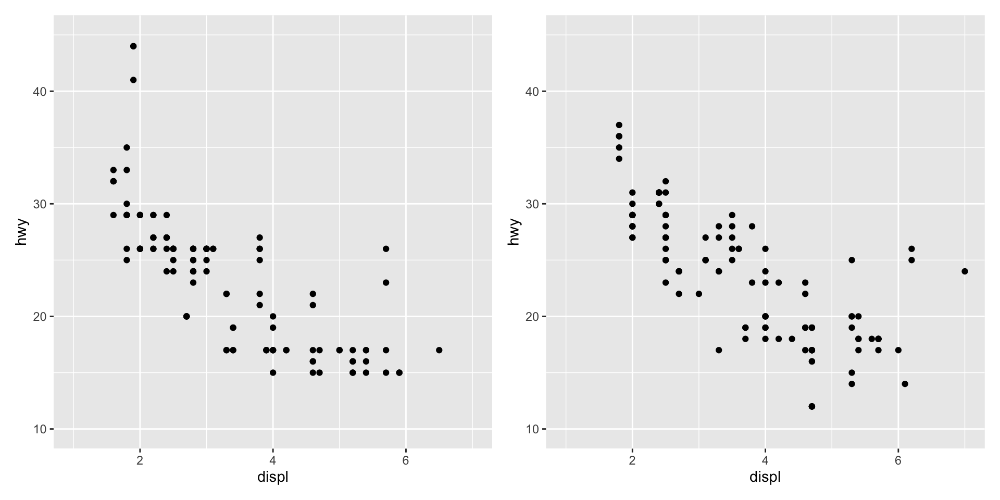
The lims() convenience function reduces verbosity when setting limits on multiple aesthetics simultaneously:

lims() follows the same name-value syntax as labs(): the argument name specifies the aesthetic, and the value specifies its limits. Single-axis helpers xlim() and ylim() are also available for quick adjustments.
Zooming In
Narrowing the scale limits is not the same as zooming in visually. When a data value falls outside the declared limits of a continuous scale, ggplot2 converts it to NA before statistical summaries are computed. This can silently distort the output of stats such as stat_boxplot.
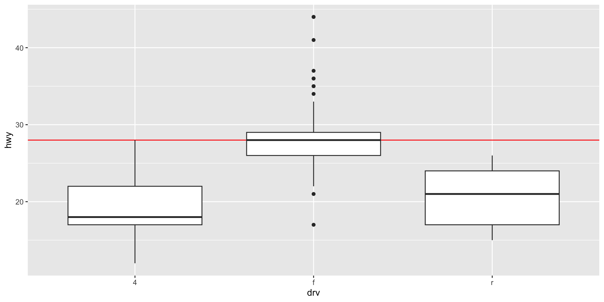
Comparing the two approaches to restricting the visible range:
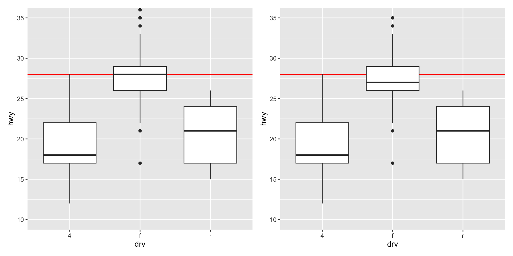
The left panel zooms safely. The right panel has silently recomputed the boxplot on a truncated sample, shifting the median downward. Always use coord_cartesian() when the intent is purely visual zoom.
Visual Range Expansion
By default, ggplot2 adds a small buffer beyond the data limits so that plotted objects do not collide with the axis lines. This buffer is controlled via the expand argument, which accepts an expansion() call.
base_raster <- ggplot(faithfuld, aes(waiting, eruptions)) +
geom_raster(aes(fill = density)) +
theme(legend.position = "none") +
labs(x = NULL, y = NULL)
# Remove all padding (useful for raster/image plots)
base_raster +
scale_x_continuous(expand = expansion(0)) +
scale_y_continuous(expand = expansion(0))
expansion() accepts two arguments:
add— a constant amount of space in data units (same scale as the variable)mult— a proportional amount relative to the full axis range
Both can be length-1 (symmetric) or length-2 (asymmetric: lower, upper).
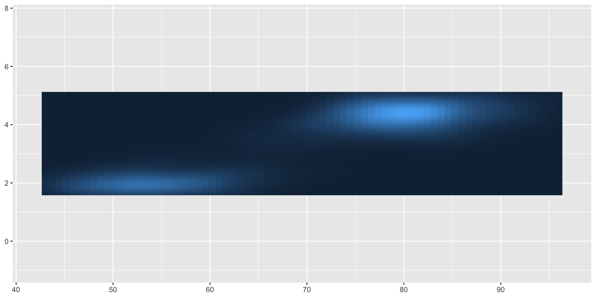
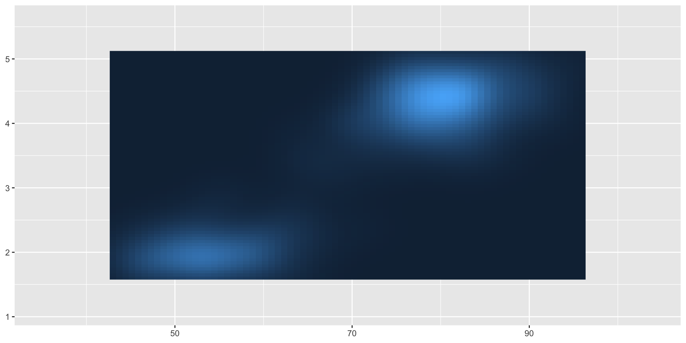
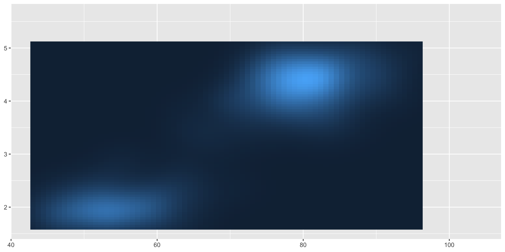
Breaks
Axis tick marks in ggplot2 are a special case of scale breaks. Their positions are set via the breaks argument to the relevant scale function.
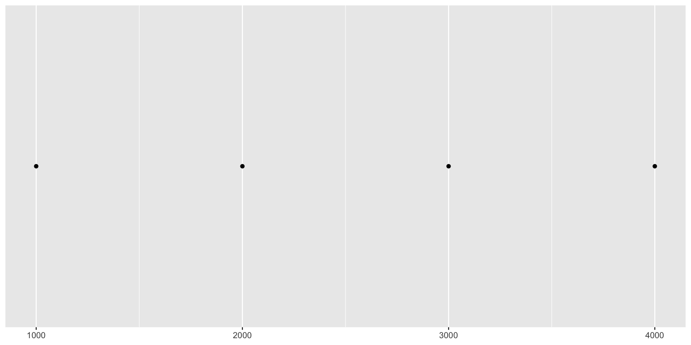
Setting breaks = NULL removes tick marks and the associated major grid lines.
Manually specifying a vector of break positions moves both the major grid lines and the minor grid lines that sit between them:
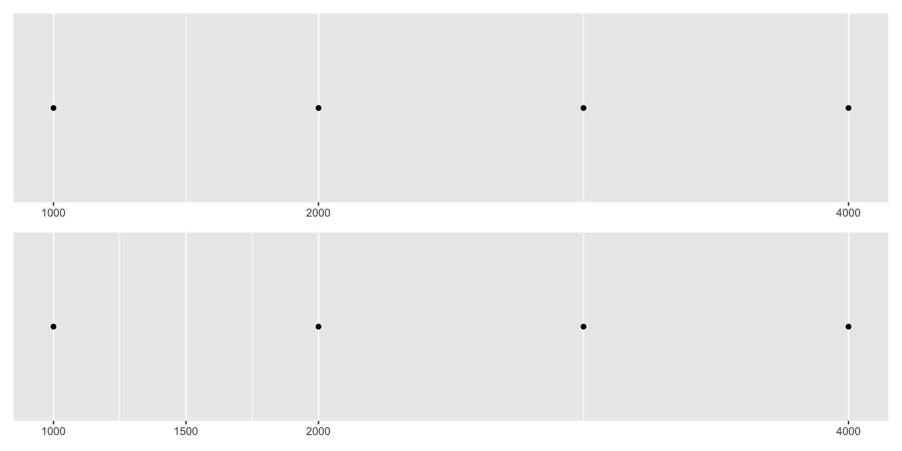
The breaks argument also accepts a function that receives the scale limits and returns break positions. The scales package provides several ready-made break functions:
| Function | Description |
|---|---|
scales::breaks_extended() |
Automatic “nice” breaks (ggplot2 default) |
scales::breaks_log() |
Breaks suited for log-transformed axes |
scales::breaks_pretty() |
Aesthetically pleasing breaks for date-times |
scales::breaks_width() |
Equally-spaced breaks at a fixed width |
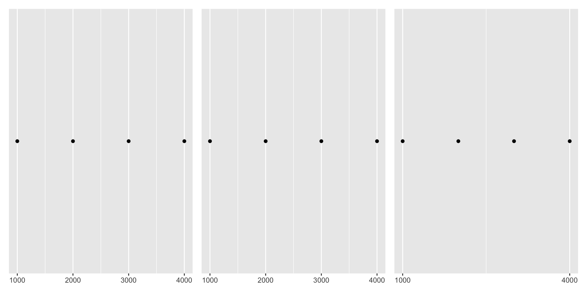
breaks_width() places breaks at a fixed interval. An optional offset shifts all breaks by a constant amount:
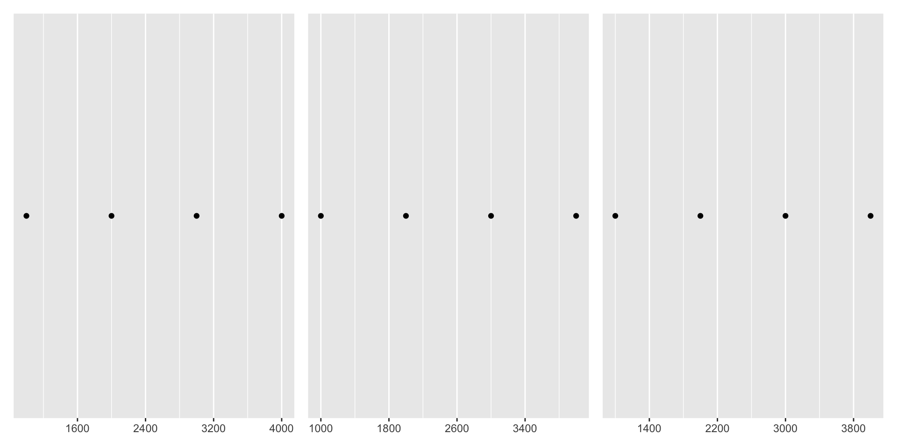
Note how a positive offset shifts all break positions upward, while a negative offset shifts them downward.
Minor Breaks
Minor breaks are the faint, unlabelled grid lines that appear between the labelled major breaks. They are set via the minor_breaks argument, which also accepts a numeric vector or a function.
Minor breaks are especially informative on log-transformed axes, where they provide a clear visual cue that the spacing is non-linear:
# Build a dense set of minor break positions across several decades
mb <- unique(as.numeric(1:10 %o% 10^(0:3)))
base_log <- ggplot(toy, aes(log, const)) +
geom_point() +
labs(x = NULL, y = NULL) +
scale_y_continuous(breaks = NULL)
p_no_mb <- base_log + scale_x_log10()
p_mb <- base_log + scale_x_log10(minor_breaks = mb)
p_no_mb | p_mb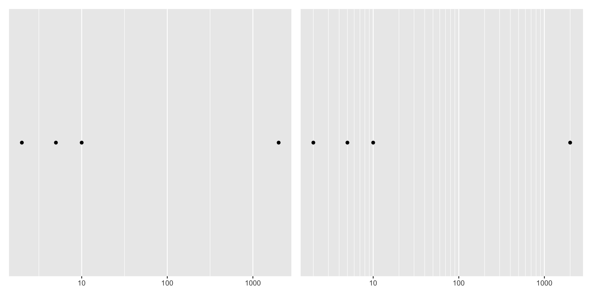
The scales package also supplies scales::minor_breaks_n() and scales::minor_breaks_width() as function-based alternatives.
Labels
Every break has an associated text label. Labels are controlled by the labels argument, which accepts either a character vector (one label per break) or a labelling function.
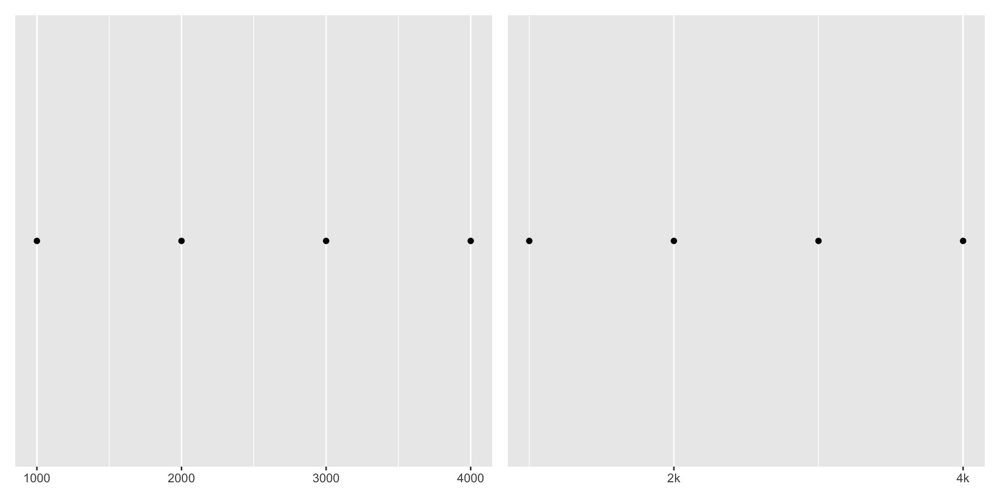
The scales package offers a suite of ready-made label formatters:
| Function | Output example |
|---|---|
scales::label_bytes() |
1.5 kB, 2.3 MB |
scales::label_comma() |
1,000 |
scales::label_dollar() |
$1,000 |
scales::label_ordinal() |
1st, 2nd, 3rd |
scales::label_percent() |
10% |
scales::label_pvalue() |
<.05, .34 |
base_lbl2 <- ggplot(toy, aes(big, const)) +
geom_point() +
labs(x = NULL, y = NULL) +
scale_x_continuous(breaks = NULL)
p_pct <- base_lbl2 + scale_y_continuous(labels = scales::label_percent())
p_eur <- base_lbl2 + scale_y_continuous(
labels = scales::label_dollar(prefix = "", suffix = "€")
)
p_pct | p_eur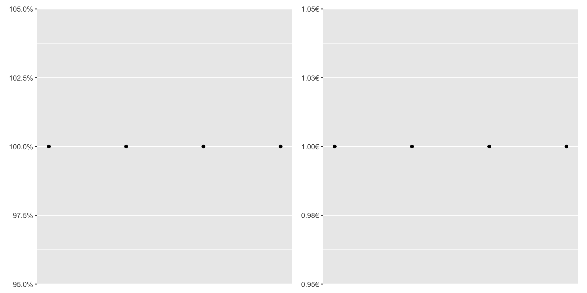
There is an important difference between setting breaks = NULL and labels = NULL:

breaks = NULLremoves both the tick marks and the major grid lines.labels = NULLhides only the text labels while preserving ticks and grid lines.
Transformations
By default, continuous position scales use an identity (linear) transformation. Overriding this is done via the trans argument, which accepts either a transformation name (string) or a transformer object from the scales package.
Convenience wrappers such as scale_x_log10(), scale_x_reverse(), and scale_x_sqrt() cover the most common cases:
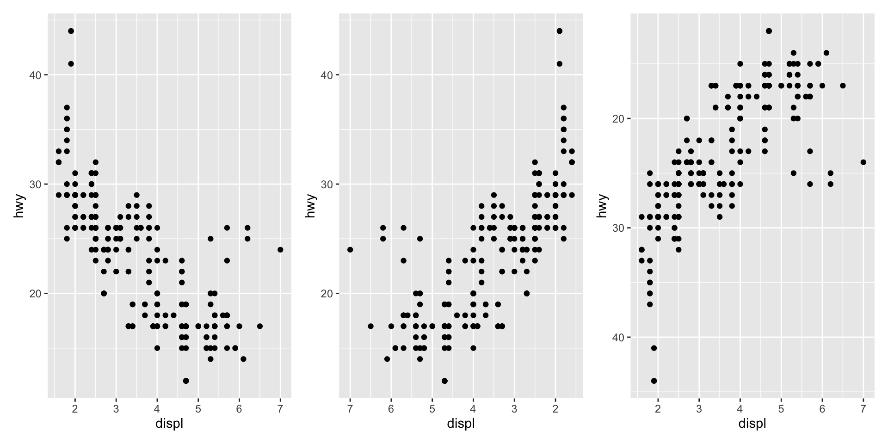
For less common transformations, use the trans argument directly:
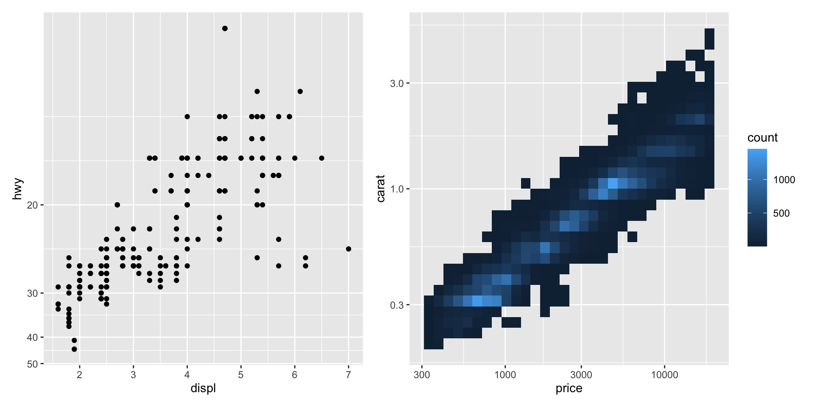
The full list of built-in transformations supplied by the scales package:
| Name | Function \(f(x)\) | Inverse \(f^{-1}(x)\) |
|---|---|---|
"asn" |
\(\tanh^{-1}(x)\) | \(\tanh(y)\) |
"exp" |
\(e^x\) | \(\log(y)\) |
"identity" |
\(x\) | \(y\) |
"log" |
\(\log(x)\) | \(e^y\) |
"log10" |
\(\log_{10}(x)\) | \(10^y\) |
"log2" |
\(\log_2(x)\) | \(2^y\) |
"logit" |
\(\log\!\left(\frac{x}{1-x}\right)\) | \(\frac{1}{1+e^y}\) |
"probit" |
\(\Phi(x)\) | \(\Phi^{-1}(y)\) |
"reciprocal" |
\(x^{-1}\) | \(y^{-1}\) |
"reverse" |
\(-x\) | \(-y\) |
"sqrt" |
\(x^{1/2}\) | \(y^2\) |
You can also call the transformer object directly—these two specifications are equivalent:
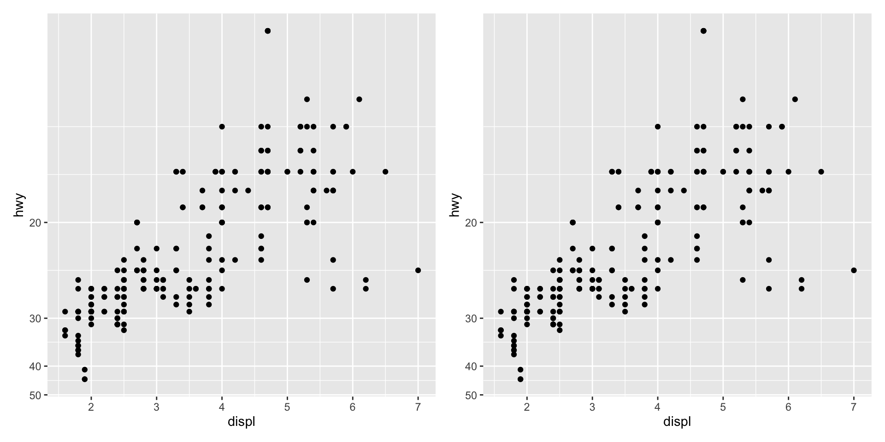
Similarly, the convenience wrapper and the explicit trans argument are interchangeable:
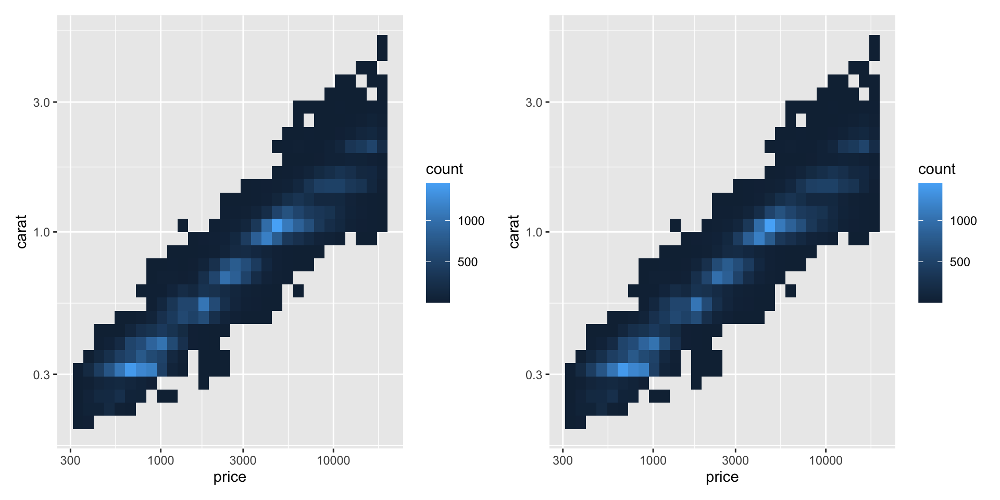
Transforming the scale vs. transforming the data
An important subtlety: transforming the scale is different from transforming the data variable directly.
# Axes labelled on the *transformed* (log10) scale
p_data <- ggplot(mpg, aes(log10(displ), hwy)) + geom_point() +
ggtitle("log10(displ) in aes()")
# Axes labelled on the *original* data scale
p_scale <- ggplot(mpg, aes(displ, hwy)) + geom_point() +
scale_x_log10() +
ggtitle("scale_x_log10()")
p_data | p_scale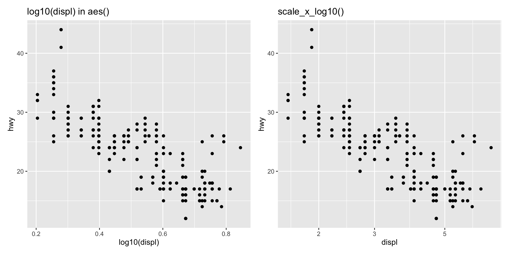
In both cases the statistical geometry is identical, but the axis tick labels differ. Transforming the scale (right) displays original data values on the ticks, which is generally more interpretable. Importantly, in both approaches the transformation occurs before any statistical summaries—use coord_trans() if transformation is needed after statistics.
Date-Time Position Scales
Date-Time Position Scales
When a date or date-time variable is mapped to x or y, ggplot2 automatically selects scale_x_date() or scale_x_datetime() as the default scale. These scales extend the continuous scale framework with date-friendly arguments for controlling breaks and labels.
Supported R date/time classes include:
Date— calendar dates (base R)POSIXct— date-time values (base R)hms— time-of-day values (hms package)
Use as.Date(), as.POSIXct(), or hms::as_hms() to convert character strings to the appropriate class before plotting.
Breaks for Date Scales
The date_breaks argument positions tick marks using human-readable date units: "years", "months", "weeks", "days", "hours", "minutes", or "seconds". A numeric prefix sets the interval size.
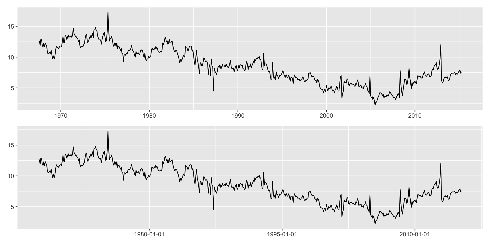
date_breaks = "15 years" is shorthand for breaks = scales::breaks_width("15 years"). Using the longer form grants access to the offset argument:
Minor Breaks for Date Scales
The date_minor_breaks argument controls minor break spacing in exactly the same way as date_breaks controls major break spacing.
df <- data.frame(y = as.Date(c("2022-01-01", "2022-04-01")))
base_d <- ggplot(df, aes(y = y)) +
labs(y = NULL) +
theme_minimal() +
theme(
panel.grid.major = element_line(colour = "black"),
panel.grid.minor = element_line(colour = "grey50")
)
p_maj <- base_d + scale_y_date(date_breaks = "1 month")
p_min <- base_d + scale_y_date(
date_breaks = "1 month",
date_minor_breaks = "1 week"
)
p_maj | p_min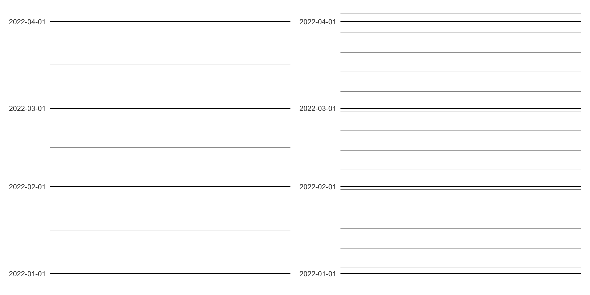
Because months have varying lengths, minor breaks (spaced exactly 7 days apart) produce slightly uneven spacing within each month.
Labels for Date Scales
Date tick labels are formatted using the date_labels argument, which accepts strptime-style format strings.
| String | Meaning |
|---|---|
%S |
Second (00–59) |
%M |
Minute (00–59) |
%H |
Hour, 24-hour clock (00–23) |
%a / %A |
Abbreviated / full weekday name |
%d |
Day of month (01–31) |
%m |
Month, numeric (01–12) |
%b / %B |
Abbreviated / full month name |
%y / %Y |
Year without / with century |
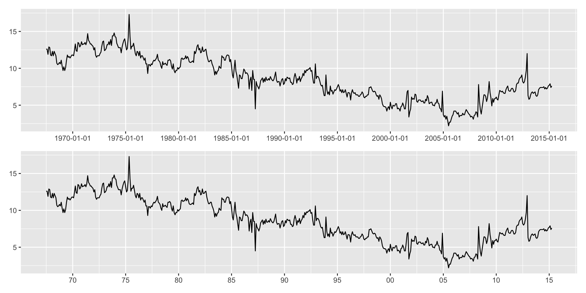
The newline character \n can be embedded in the format string to stack label components across multiple lines, reducing horizontal crowding:
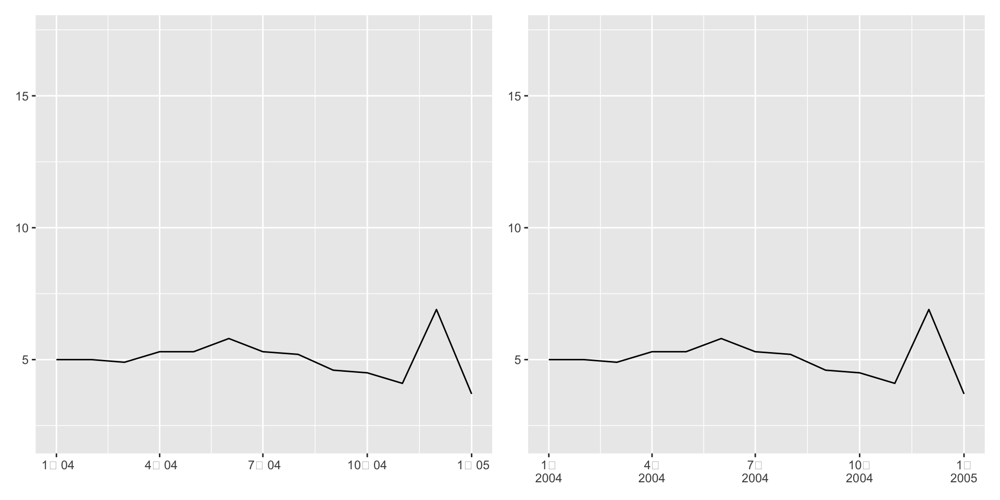
An alternative to date_labels is to pass a labelling function to the labels argument. The scales::label_date_short() function is particularly useful: it automatically abbreviates labels so that repeated information (such as the year) is printed only once per sequence, reducing visual clutter:
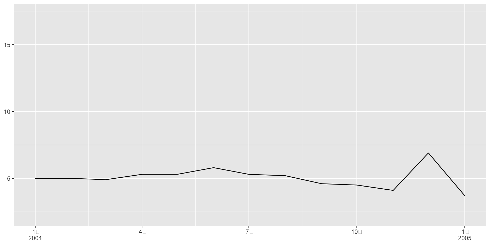
Discrete Position Scales
Discrete Position Scales
When a categorical (factor or character) variable is mapped to x or y, ggplot2 selects scale_x_discrete() or scale_y_discrete() automatically. Internally, each category is assigned an integer position, which allows all width-related parameters (bar width, jitter height, etc.) to be specified as proportions of the per-category unit interval.
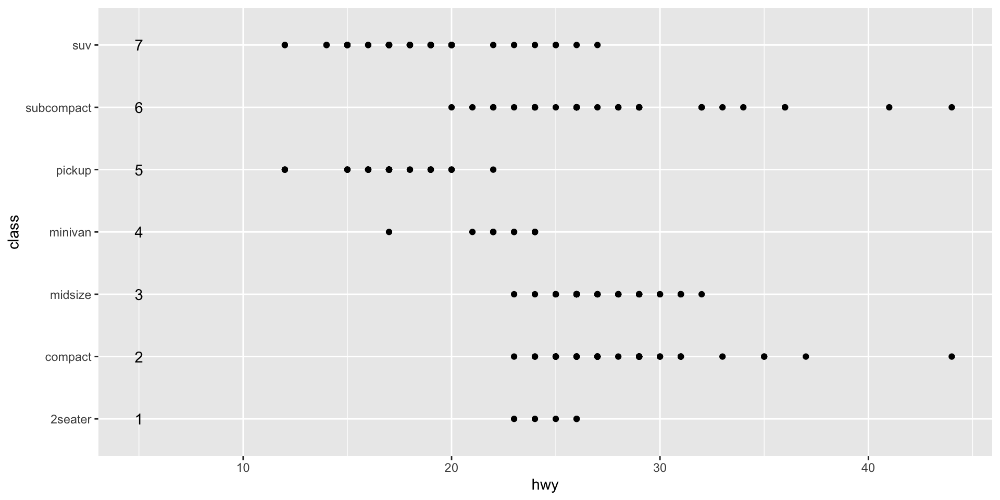
Because each category occupies unit width on the discrete scale, setting height = .25 in geom_jitter() produces a jitter spanning ±0.25 of the category bin:
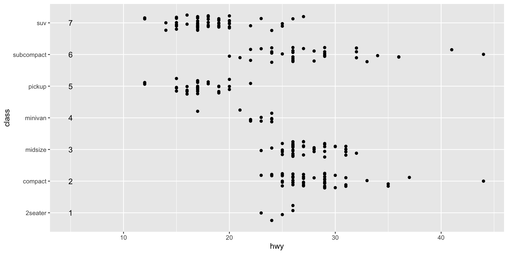
The same logic governs box widths in geom_boxplot(): width = .4 reserves 40% of the category slot for the box.
Limits, Breaks, and Labels
For discrete scales, limits defines the complete ordered set of allowable values (not endpoints). Values present in the data but absent from limits are silently dropped; values in limits but absent from the data create empty locations.
base_disc <- ggplot(toy, aes(const, txt)) +
geom_label(aes(label = txt)) +
scale_x_continuous(breaks = NULL) +
labs(x = NULL, y = NULL)
p_extra <- base_disc + scale_y_discrete(limits = c("a", "b", "c", "d", "e"))
p_reord <- base_disc + scale_y_discrete(limits = c("d", "c", "a", "b"))
base_disc | p_extra | p_reord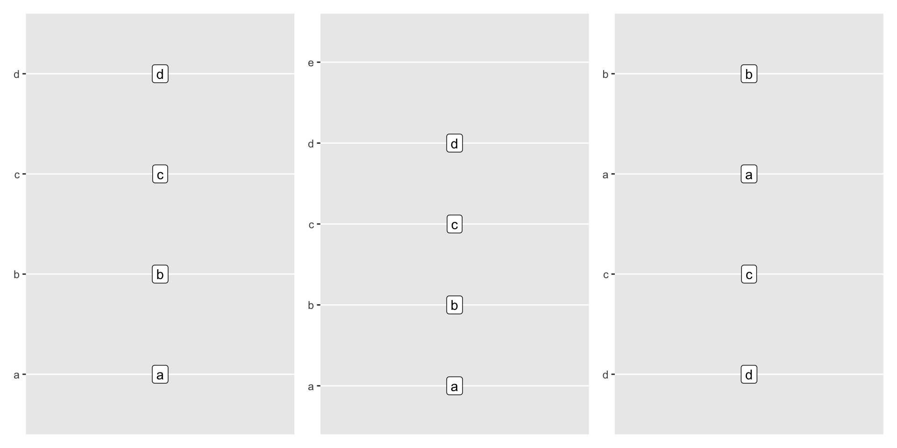
The breaks argument selects which values receive axis labels; labels maps specific values to custom display strings using a named character vector—without disturbing the order or break set:
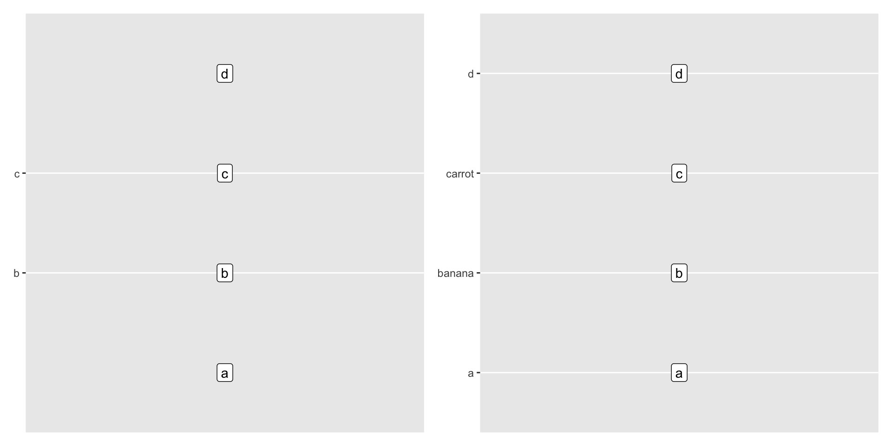
The function scales::label_wrap() is useful for long category names—it automatically wraps text onto multiple lines within a specified character width.
Label Positions
Overlapping axis labels are a common problem with categorical data. The guides() function and guide_axis() give precise control over label placement:
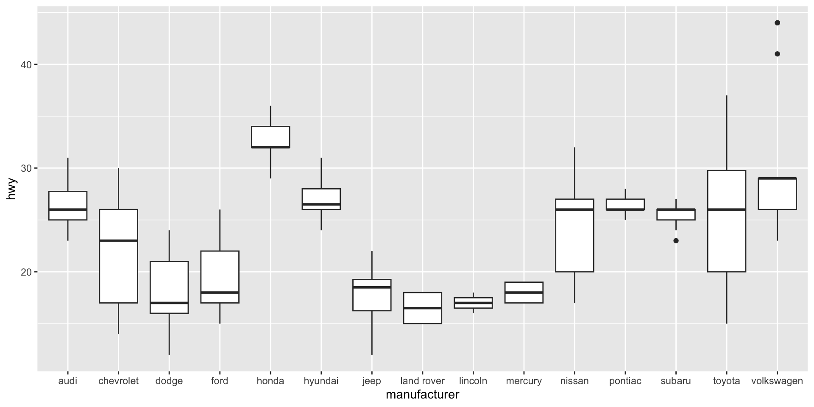
Two effective remedies are dodging (staggering labels across multiple rows) and rotation:
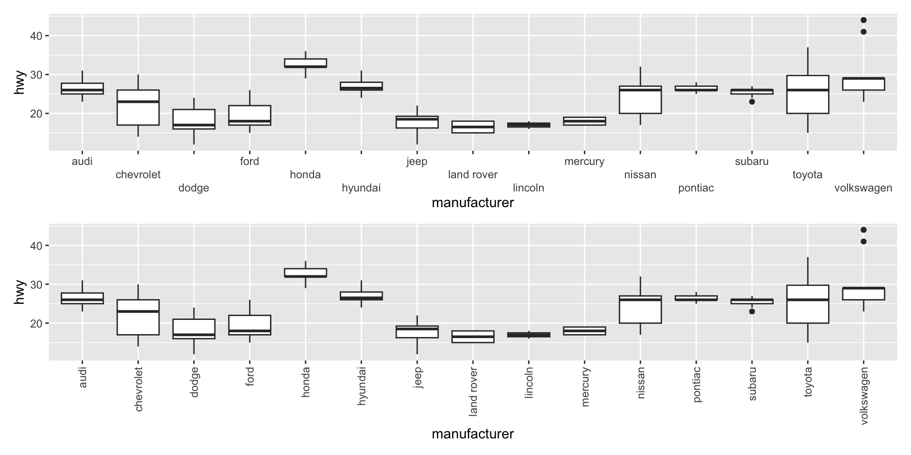
guides() is a shorthand: the equivalent long form passes guide directly inside the scale function.
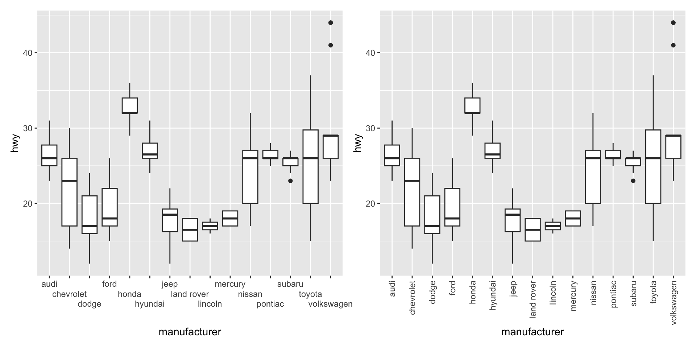
Binned Position Scales
Binned Position Scales
Binned position scales occupy the space between continuous and discrete scales. They slice a continuous variable into equally-spaced bins and then treat each bin as a discrete category. The primary function is scale_x_binned() (and scale_y_binned()).
The most familiar application is histogram-like plots. The example below demonstrates how geom_bar() combined with scale_x_binned() can approximate geom_histogram():
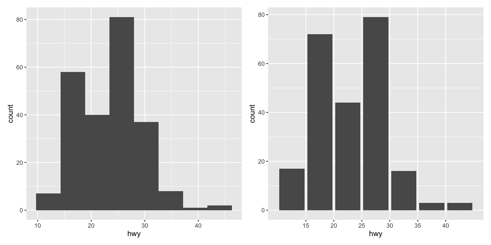
A more practically useful application pairs scale_x_binned() with geom_count(). Without binning, geom_count() on continuous data produces an over-crowded plot because every distinct coordinate pair gets its own dot:
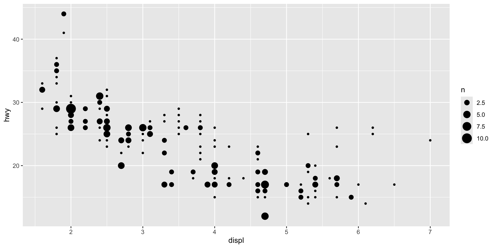
Adding binned scales on both axes groups nearby points into discrete cells, yielding a much more readable summary:
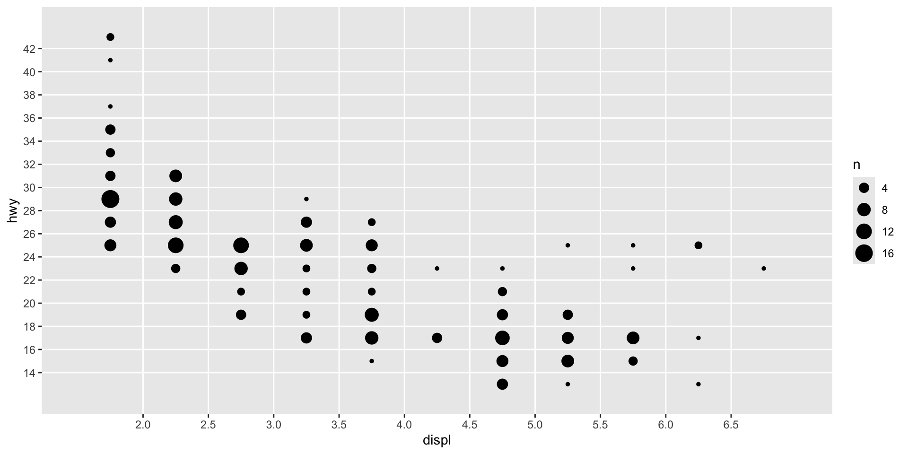
The n.breaks argument controls the number of cut points. Binned scales for non-position aesthetics (colour, size, etc.) are discussed in §11.4 and §12.1.2.
Exercises
Using
scale_x_continuous(), limit the x-axis of aggplot(mpg, aes(displ, hwy)) + geom_point()plot to the range 2–5 in two ways: (a) vialimits, and (b) viacoord_cartesian(). Describe the difference in behaviour.Create a time-series line plot of
economics$psavertagainstdate. Set major breaks every 10 years and minor breaks every 2 years. Format the labels to show only the two-digit year.Using the
mpgdataset, produce a boxplot ofhwybymanufacturer. Applyguide_axis(angle = 45)to make the x-axis labels readable.Why does
scale_x_log10()produce different axis tick labels fromaes(x = log10(displ))? Under what circumstances would you prefer each approach?Use
scale_x_binned()withgeom_count()to visualise the joint distribution ofctyandhwyin thempgdataset. Experiment with different values ofn.breaks.
Acknowledgement
Copyright notice. These teaching materials have been adapted from ggplot2: Elegant Graphics for Data Analysis (3e). All rights are reserved by the original authors and publishers.
Non-commercial use only. These materials are strictly intended for educational purposes and must not be used for commercial gain or profit.
Proper attribution. Any reproduction, distribution, or use of these materials must provide proper attribution to the original source.
References

ggplot2: Elegant Graphics for Data Analysis